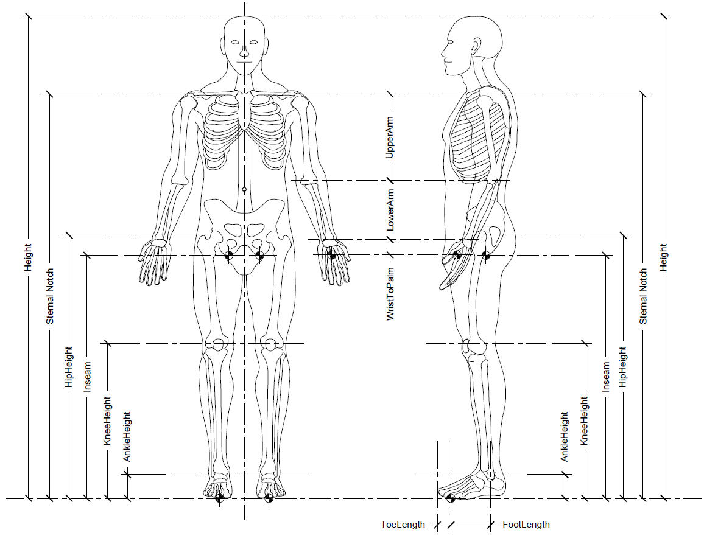

These are the measurements of the Rider. They are used to define the virtual rider (stick figure).
When the rider measurements are taken, it is assumed that the rider will be standing straight. Many of the measurements target the center of rotation of joints which do not neccessarily align with physical joints themselves.
This is the overall height of the rider from the top of the head to the floor.
This is the height of the sternal notch above the floor. This data point is use as teh center of rotation of the shoulder.
This is the height of the bottom of the hips (the sit bones) above the floor. The sit bones are the interface point for the rider when seated and when out of saddle.
This is the height of the hip center of rotation above the floor.
This is the height of the center of rotation of the knee above the floor.
This is the height of the center of rotation of the ankle above the floor.
This is the length of the foot from the center of rotaion of the ankle to the ball of the foot. This should only be the horizontal distance (both joints should be projected to the floor and then measured). The ball of the foot is the interface point of the virtual rider.
This is the distance from the ball of the foot to the tip of the toes.
This is the distance from the center of rotation of the shoulder to the center of rotation of the elbow.
This is the distance from the center of rotation of the elbow to the center of rotation of the wrist.
This is the distance from the center of rotation of the wrist to the center of the palm of the hand. The center of the palm is considered the grasping point and is where the virtual rider interfaces with the handlebars.